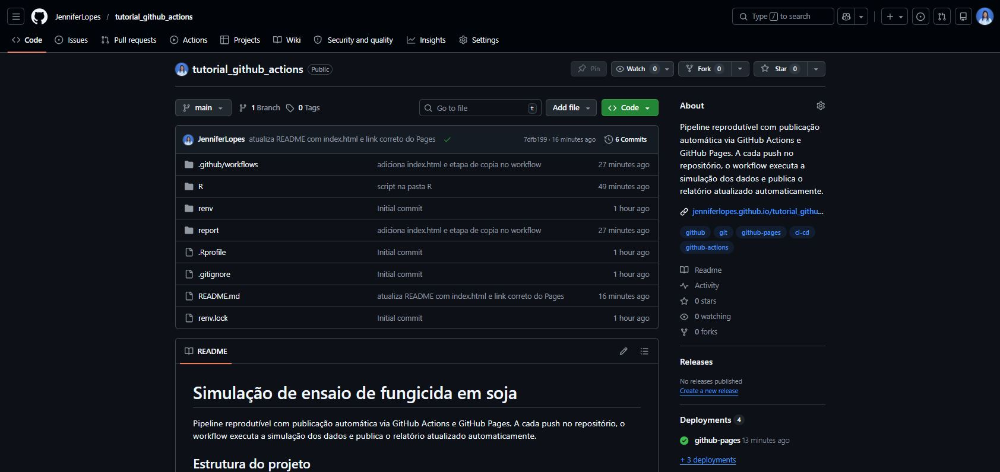
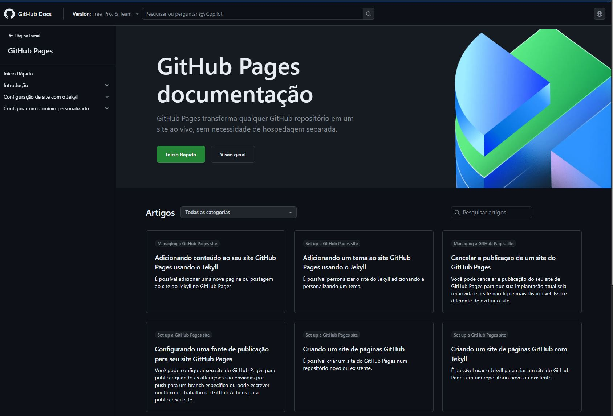
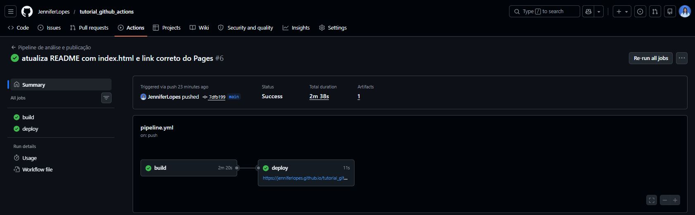
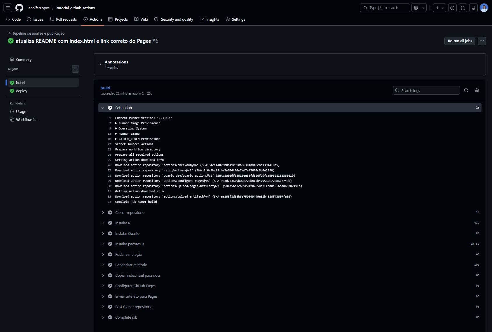

Aula 18 . GitHub Actions para projetos de dados em R
Do conceito ao deploy: pipeline automático com publicação no GitHub Pages.
Acompanhe o Café com R

Printa a tela e escaneia o QR Code.
EM BREVE - NO YOUTUBE

Inscreva-se já no Link.
Antes de começar
- O projeto utilizado nessa aula está no repositório do
GitHub.

- O relatório publicado está disponível em GitHub Pages.
Todos os erros, avisos e dicas foram documentados a partir de situações reais vividas durante o desenvolvimento deste e de outros projetos.
O que é GitHub Actions

Conceito
GitHub Actionsé uma plataforma de automação integrada ao GitHub que permite executar tarefas automaticamente em resposta a eventos no repositório.Em projetos de dados, isso significa que a cada atualização do código, o pipeline executa sozinho: instala pacotes, roda scripts, renderiza relatórios e publica resultados.
Tudo isso sem abrir o RStudio, sem rodar nada manualmente.
O que é CI/CD
CI (Continuous Integration): integração contínua. Cada atualização de código é testada e validada automaticamente.
CD (Continuous Deployment): entrega contínua. O resultado validado é publicado automaticamente para o ambiente final.
Em ciência de dados: a análise roda automaticamente e o relatório é publicado sem intervenção manual.
Por que usar GitHub Actions em dados
- O relatório fica sempre atualizado sem precisar rodar manualmente
- Qualquer pessoa que clonar o repositório pode reproduzir o pipeline
- Os logs ficam registrados para auditoria
- É a mesma infraestrutura usada em produção em empresas de dados
- Demonstra maturidade técnica no portfólio
Dica
Para projetos de análise estatística com relatório em Quarto, o GitHub Actions é a forma mais simples de garantir que o resultado publicado sempre corresponde ao código do repositório.
GitHub Actions x outras ferramentas
| Ferramenta | Onde roda | Indicada para |
|---|---|---|
| GitHub Actions | Nuvem GitHub | Projetos no GitHub |
| GitLab CI | Nuvem GitLab | Projetos no GitLab |
| Jenkins | Servidor próprio | Empresas com infraestrutura local |
| Azure Pipelines | Nuvem Microsoft | Integração com Azure |
Dica
Para portfólio e projetos acadêmicos, o GitHub Actions é a escolha mais simples pois não exige nenhuma infraestrutura adicional.
Conceitos fundamentais
O que é um workflow
Um workflow é o arquivo que define toda a automação. Ele fica em
.github/workflows/e é escrito em formato YAML.Cada repositório pode ter vários workflows para finalidades diferentes.
O nome do arquivo pode ser qualquer um com extensão
.yml.
.github/
└── workflows/
├── pipeline.yml # roda a análise e publica
└── verificar.yml # verifica o código a cada PRO que é um trigger (gatilho)
Um trigger define quando o workflow dispara. Os mais comuns são:
push: dispara quando há um push em uma branch específicapull_request: dispara quando um pull request é abertoschedule: dispara em horários definidos (cron)workflow_dispatch: dispara manualmente pela interface do GitHub
Dica
Durante o desenvolvimento, use workflow_dispatch para rodar o workflow manualmente sem precisar fazer um push a cada teste.
O que é um runner
Um runner é a máquina virtual onde o workflow executa. O GitHub fornece runners gratuitos com Ubuntu, Windows e macOS.
Para projetos de dados em R, sempre use
ubuntu-22.04pois é o mesmo sistema da imagemrocker/tidyversee do Posit Package Manager.
Importante
Nunca use ubuntu-latest em projetos de dados em R. A versão exata do Ubuntu afeta quais binários o Posit Package Manager entrega. Com ubuntu-22.04 (Jammy) os pacotes instalam como binários pré-compilados. Com versões diferentes, o R compila do código fonte e o workflow trava.
O que é um job
Um job é um conjunto de steps que roda em um runner. Por padrão, jobs diferentes rodam em paralelo.
Para publicar no GitHub Pages, precisamos de dois jobs em sequência: build e deploy.
O que é um step
- Um step é uma etapa dentro de um job. Pode ser um comando shell ou uma action reutilizável.
steps:
- name: Clonar repositório
uses: actions/checkout@v4
- name: Instalar pacotes R
run: Rscript -e "install.packages('tidyverse')"uses: usa uma action pronta do marketplace do GitHubrun: executa um comando diretamente no terminal do runner
O que são actions
Actions são blocos reutilizáveis criados pela comunidade. Em vez de escrever scripts longos, você usa actions prontas para tarefas comuns.
As mais usadas em projetos de dados em R:
| Action | Função |
|---|---|
actions/checkout@v4 |
Clona o repositório no runner |
r-lib/actions/setup-r@v2 |
Instala R no runner |
quarto-dev/quarto-actions/setup@v2 |
Instala Quarto no runner |
actions/configure-pages@v5 |
Configura o GitHub Pages |
actions/upload-pages-artifact@v3 |
Envia os arquivos para o Pages |
actions/deploy-pages@v4 |
Publica no GitHub Pages |
Estrutura do arquivo .yml
Onde fica o arquivo
O arquivo de workflow deve estar exatamente neste caminho dentro do repositório:
.github/
└── workflows/
└── pipeline.ymlAviso
A pasta .github começa com ponto e pode ser invisível no Windows. No terminal do RStudio, confirme que ela foi criada com ls -la antes de fazer o push.
Anatomia completa do workflow
name: Pipeline de análise e publicação
on:
push:
branches: [main, master]
workflow_dispatch:
permissions:
contents: read
pages: write
id-token: write
concurrency:
group: pages
cancel-in-progress: false
jobs:
build:
runs-on: ubuntu-22.04
steps:
- ...
deploy:
needs: build
runs-on: ubuntu-22.04
steps:
- ...Explicação do cabeçalho
name: nome do workflow que aparece na aba Actions do GitHub.
on: define os gatilhos. push dispara ao fazer push no repositório. workflow_dispatch permite rodar manualmente.
permissions: define o que o workflow pode fazer no repositório. Para publicar no Pages são necessárias as permissões pages: write e id-token: write.
concurrency: garante que apenas uma execução do workflow roda por vez. Evita conflitos quando há vários pushes em sequência.
O job build
jobs:
build:
runs-on: ubuntu-22.04
steps:
- name: Clonar repositório
uses: actions/checkout@v4
- name: Instalar R
uses: r-lib/actions/setup-r@v2
with:
r-version: '4.4.1'
use-public-rspm: true
- name: Instalar Quarto
uses: quarto-dev/quarto-actions/setup@v2
- name: Instalar pacotes R
run: |
Rscript -e "
options(repos = c(CRAN = 'https://packagemanager.posit.co/cran/__linux__/jammy/latest'));
install.packages(c('tidyverse', 'knitr', 'rmarkdown'))
"O job build (continuação)
- name: Rodar simulação
run: Rscript R/01_simular_dados.R
- name: Renderizar relatório
run: |
quarto render report/relatorio_simulacao.qmd \
--output-dir ../docs \
--execute-dir .
- name: Copiar index.html para docs
run: cp report/index.html docs/index.html
- name: Configurar GitHub Pages
uses: actions/configure-pages@v5
- name: Enviar artefato para Pages
uses: actions/upload-pages-artifact@v3
with:
path: docsO job deploy
deploy:
needs: build
runs-on: ubuntu-22.04
environment:
name: github-pages
url: ${{ steps.deployment.outputs.page_url }}
steps:
- name: Publicar no GitHub Pages
id: deployment
uses: actions/deploy-pages@v4needs: buildgarante que o deploy só roda após o build terminar com sucessoenvironmentdefine o ambiente de publicação e expõe o link do Pages no summaryurlcaptura o link gerado automaticamente pelo Pages e exibe no summary do workflow
Configurando o ambiente R
Por que usar r-lib/actions/setup-r
A action r-lib/actions/setup-r instala R no runner com configurações otimizadas para CI/CD:
r-version: fixa a versão do R, garantindo reprodutibilidadeuse-public-rspm: true: ativa automaticamente o Posit Package Manager como repositório padrão
Importante
Sempre fixe a versão do R com r-version. Sem isso, o runner instala a versão mais recente, que pode mudar entre execuções e quebrar a reprodutibilidade.
Por que o Posit Package Manager é essencial
No GitHub Actions, o runner usa Ubuntu. O CRAN padrão não fornece binários para Linux, o que força o R a compilar cada pacote do código fonte em C++.
- Com CRAN padrão: instalação de 10 pacotes pode levar 30 a 60 minutos e frequentemente excede o tempo limite do workflow
- Com Posit Package Manager: os mesmos pacotes instalam em menos de 2 minutos como binários pré-compilados
options(repos = c(CRAN = 'https://packagemanager.posit.co/cran/__linux__/jammy/latest'))
install.packages(c('tidyverse', 'knitr', 'rmarkdown'))Aviso
O endereço jammy no URL corresponde ao Ubuntu 22.04. Se mudar o runner para outra versão do Ubuntu, o endereço do Posit Package Manager também muda.
Instalando pacotes de forma eficiente
- name: Instalar pacotes R
run: |
Rscript -e "
options(repos = c(CRAN = 'https://packagemanager.posit.co/cran/__linux__/jammy/latest'));
install.packages(c('tidyverse', 'knitr', 'rmarkdown'))
"Dica
Mantenha a lista de pacotes no workflow enxuta. Instale apenas o necessário para o relatório rodar. Cada pacote adicional aumenta o tempo de execução mesmo com binários pré-compilados.
Renderizando o relatório Quarto
Instalando o Quarto no runner
A action quarto-dev/quarto-actions/setup instala a versão mais recente do Quarto CLI no runner. Não é necessário especificar a versão para a maioria dos projetos.
O comando quarto render
- name: Renderizar relatório
run: |
quarto render report/relatorio_simulacao.qmd \
--output-dir ../docs \
--execute-dir .report/relatorio_simulacao.qmd: caminho para o arquivo a renderizar--output-dir ../docs: pasta onde o HTML será salvo. A pastadocs/fica na raiz do projeto--execute-dir .: define o diretório de trabalho do R durante a execução
Importante
O parâmetro --execute-dir é obrigatório quando o .qmd está em uma subpasta. Sem ele, o R executa a partir da pasta report/ e não encontra os arquivos em data/ ou R/, gerando erro de arquivo não encontrado.
Publicando no GitHub Pages

O que é o GitHub Pages
GitHub Pages é um serviço gratuito do GitHub que hospeda sites estáticos diretamente a partir de um repositório.
Para projetos de dados, é a forma mais simples de publicar um relatório HTML com um link público permanente.
O link segue o padrão:
https://seu-usuario.github.io/nome-do-repositorio/Como ativar o GitHub Pages
- Abra o repositório no GitHub
- Clique em Settings
- No menu lateral clique em Pages
- Em Source selecione GitHub Actions
- Clique em Save
Aviso
O GitHub Pages precisa ser ativado antes da primeira execução do workflow. Se o Pages não estiver configurado, o step configure-pages falha com o erro Get Pages site failed. Not Found.
O que é o index.html e por que é necessário
Quando alguém acessa a raiz do site, por exemplo https://seu-usuario.github.io/projeto/, o GitHub Pages procura por um arquivo index.html. Se não encontrar, retorna erro 404.
O index.html que usamos redireciona automaticamente para o relatório:
Sem ele o visitante precisa digitar o nome completo do arquivo no link. Com ele, o link raiz já abre o relatório direto.
O arquivo index.html completo
<!DOCTYPE html>
<html lang="pt">
<head>
<meta charset="UTF-8">
<meta http-equiv="refresh" content="0; url=relatorio_simulacao.html">
<title>Redirecionando...</title>
</head>
<body>
<p>Redirecionando para o relatório...</p>
</body>
</html>Esse arquivo fica em report/index.html e é copiado para a pasta docs/ pelo workflow antes do deploy.
Os steps de publicação
- name: Configurar GitHub Pages
uses: actions/configure-pages@v5
- name: Enviar artefato para Pages
uses: actions/upload-pages-artifact@v3
with:
path: docs
- name: Publicar no GitHub Pages
id: deployment
uses: actions/deploy-pages@v4configure-pages: verifica se o Pages está ativado e configura o ambienteupload-pages-artifact: empacota a pastadocs/e envia para o GitHubdeploy-pages: publica o pacote enviado e gera o link público
Passo a passo completo
Estrutura do projeto
soja_actions/
├── .github/
│ └── workflows/
│ └── pipeline.yml
├── R/
│ └── 01_simular_dados.R
├── report/
│ ├── relatorio_simulacao.qmd
│ └── index.html
├── data/
└── README.mdPasso 1: criar o repositório
- Acesse github.com e clique em New repository
- Defina o nome do repositório
- Deixe como Public
- Clique em Create repository
Passo 2: criar o projeto local e subir os arquivos
No terminal do RStudio, dentro da pasta do projeto:
Passo 3: ativar o GitHub Pages
- Abra o repositório no GitHub
- Clique em Settings > Pages
- Em Source selecione GitHub Actions
- Clique em Save
Passo 4: acompanhar o workflow
- Clique na aba Actions do repositório
- Clique na execução mais recente
- Acompanhe cada step em tempo real
- Quando aparecer o círculo verde, o workflow terminou com sucesso
Passo 5: acessar o relatório publicado
O link aparece no summary do workflow abaixo do job deploy:
https://seu-usuario.github.io/soja_actions/Esse link é público e pode ser compartilhado diretamente no LinkedIn e colocado no README do projeto.
O que aparece na aba Actions
Lendo o summary do workflow

- Círculo verde: workflow terminou com sucesso
- Círculo vermelho: workflow falhou em algum step
- Círculo amarelo: workflow está em execução
- Círculo cinza com i: workflow foi cancelado
O que são artifacts
- Artifacts são arquivos gerados durante o workflow e salvos temporariamente pelo GitHub.
- No summary, o artifact
github-pagescontém o HTML do relatório empacotado antes do deploy. - O tamanho do artifact aparece em KB. Para relatórios simples, fica em torno de 500 KB a 1 MB.
Por que aparecem várias execuções
Cada push ou execução manual gera uma nova linha na aba Actions. Isso é o comportamento esperado e desejado.
O histórico de execuções mostra:
- Quando cada análise foi rodada
- Qual commit disparou cada execução
- Quanto tempo cada execução levou
- Se houve falha e em qual step
Dica
Use mensagens de commit descritivas pois elas aparecem diretamente no histórico do Actions. git commit -m "fix: corrige caminho do CSV" é muito mais informativo do que git commit -m "ajuste".
Como ver os logs de cada step
- Clique na execução na aba Actions
- Clique no job build ou deploy
- Clique em qualquer step para expandir os logs
- Os logs mostram exatamente o que o runner executou e o que retornou
Dica
Quando um workflow falha, os logs do step com erro mostram a mensagem exata. Leia a última linha antes do Error para identificar o problema.
Como ver os logs de cada step

Erros comuns e como resolver
Erro 1: Pages não ativado
Mensagem:
Error: Get Pages site failed. Please verify that the repository
has Pages enabled and configured to build using GitHub Actions.
Error: Not FoundCausa: O GitHub Pages não foi ativado antes da primeira execução do workflow.
Solução:
- Vá em Settings > Pages no repositório
- Em Source selecione GitHub Actions
- Clique em Save
- Volte na aba Actions e clique em Re-run all jobs
Erro 2: arquivo HTML não encontrado (404)
Sintoma: O workflow roda com sucesso mas ao acessar o link aparece erro 404.
Causa 1: O arquivo index.html não foi criado ou não foi copiado para a pasta docs/.
Solução: Verificar se o step Copiar index.html para docs está no workflow e se o arquivo report/index.html existe no repositório.
Causa 2: O relatório foi gerado com nome diferente do especificado no index.html.
Solução: Conferir se o nome do arquivo no <meta http-equiv="refresh"> do index.html corresponde ao nome gerado pelo Quarto.
Erro 3: pacotes demorando mais de 10 minutos
Sintoma: O step de instalação de pacotes fica rodando por muito tempo ou excede o tempo limite do workflow.
Causa: O Posit Package Manager não está configurado e o R está compilando do código fonte.
Solução: Garantir que o options(repos = ...) com o endereço do Posit Package Manager está definido antes do install.packages:
Erro 4: CSV não encontrado durante renderização
Mensagem:
Error: 'data/ensaio_fungicida.csv' does not exist in current
working directory: '/home/runner/work/projeto/projeto/report'Causa: O --execute-dir está faltando no comando quarto render. O Quarto executa a partir da pasta report/ e não encontra a pasta data/.
Solução: Adicionar --execute-dir . ao comando de renderização:
Erro 5: workflow não dispara após push
Causa 1: O arquivo .yml não está no caminho correto .github/workflows/.
Solução: Verificar no repositório do GitHub se a pasta .github aparece na raiz. Se não aparecer, o Git pode ter ignorado a pasta oculta.
Causa 2: A branch do push não corresponde à branch definida no trigger.
Solução: Verificar se o push foi feito para main e se o workflow tem main na lista de branches:
Erro 6: permissões insuficientes para deploy
Mensagem:
Error: HttpError: Resource not accessible by integrationCausa: As permissões pages: write e id-token: write estão faltando no workflow.
Solução: Adicionar o bloco de permissões no início do workflow:
Boas práticas
Testar localmente antes de subir
Importante
Sempre teste o pipeline localmente antes de fazer push. Cada execução com erro no Actions consome minutos do runner gratuito e fica registrada no histórico.
Se renderizar sem erros localmente, o workflow tem alta chance de passar.
Manter o workflow simples
- Instale apenas os pacotes que o relatório realmente usa
- Evite steps desnecessários no início do desenvolvimento
- Adicione complexidade gradualmente, testando a cada adição
- Um workflow simples que funciona é melhor que um workflow completo que falha
Usar workflow_dispatch durante o desenvolvimento
Durante o desenvolvimento, use workflow_dispatch para rodar o workflow manualmente sem precisar fazer um push a cada teste:
- Acesse a aba Actions
- Clique no nome do workflow no menu lateral
- Clique em Run workflow
- Clique em Run workflow novamente na caixa que aparece
Dica
Isso evita poluir o histórico de commits com mensagens como teste, ajuste, mais um teste apenas para disparar o workflow.
Nomear os commits com clareza
As mensagens de commit aparecem diretamente no histórico do Actions. Compare:
| Commit vago | Commit descritivo |
|---|---|
ajuste |
fix: corrige caminho do CSV no quarto render |
teste |
test: verifica instalacao de pacotes com posit |
ok |
feat: adiciona index.html com redirecionamento |
Commits descritivos tornam o histórico do Actions legível e facilitam identificar qual mudança causou uma falha.
Checklist antes do primeiro push - resumido
Antes de subir o projeto e rodar o workflow pela primeira vez, confirme:
- O arquivo
.ymlestá em.github/workflows/ - O GitHub Pages está ativado com GitHub Actions como source
- O
index.htmlexiste emreport/ - O workflow usa
ubuntu-22.04como runner - O Posit Package Manager está configurado no step de instalação
- O
quarto rendertem--execute-dir . - O pipeline roda sem erros localmente
Checklist para o próximo projeto completo
Antes de criar o workflow
- O pipeline roda sem erros localmente com
source()equarto::quarto_render() - O relatório renderiza localmente sem erros
- A pasta
data/é gerada pelos scripts e está no.gitignore - O
.gitignoretemdata/e a pasta de output
Estrutura de pastas
.github/workflows/pipeline.ymlexiste na raiz do projeto- O script R está em
R/ - O
.qmdestá emreport/ - O
index.htmlestá emreport/ - O
index.htmlaponta para o nome correto do HTML gerado pelo Quarto
O arquivo pipeline.yml
- O runner é
ubuntu-22.04(nãoubuntu-latest) - A versão do R está fixada com
r-version: '4.4.1' use-public-rspm: trueestá no step de instalação do R- O Posit Package Manager está no
options(repos = ...)antes doinstall.packages - A lista de pacotes tem apenas o necessário
- O
quarto rendertem--output-dirapontando para../docs - O
quarto rendertem--execute-dir . - O step de copiar o
index.htmlparadocs/existe - As permissões
pages: writeeid-token: writeestão no cabeçalho - O job
deploytemneeds: build
GitHub Pages
- O repositório está como Public
- O Pages está ativado em Settings > Pages > Source > GitHub Actions
- O Pages foi ativado antes da primeira execução do workflow
Git e repositório
- A pasta
.githubaparece na raiz do repositório no GitHub - O push foi feito para a branch
mainoumaster - O commit tem uma mensagem descritiva
Após o primeiro push
- A aba Actions mostra o workflow rodando
- Todos os steps terminam com ícone verde
- O link aparece no summary do job
deploy - O link abre o relatório sem erro 404
- O link raiz redireciona automaticamente para o relatório
Se algo falhar
- Clique no job com erro na aba Actions
- Expanda o step vermelho
- Leia a última linha antes do
Error - Consulte a seção de erros comuns da aula
Acompanhe o Café com R
Printa a tela e escaneia o QR Code.
EM BREVE - NO YOUTUBE
Inscreva-se já no Link.
Jennifer Lopes | Café com R | GitHub Actions para projetos de dados em R